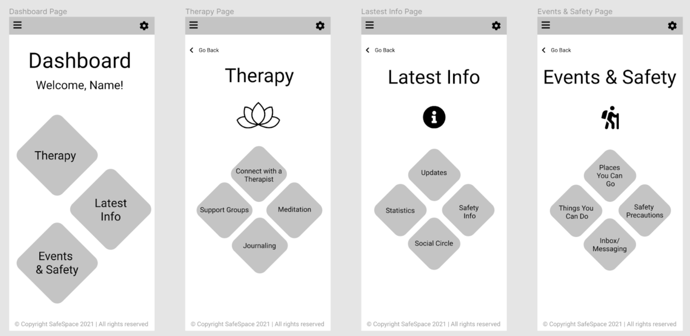

SafeSpace Case study
Overview
People are stuck inside with no opportunities to engage with others, which is disrupting their social lives and communication skills. What solutions can I come up with to mitigate the effects of social isolation while keeping users safe from COVID-19?
Goals
Come up with an app that allows users to connect with therapists via video calling, and vaccinated people in their "friends circle" via in-person events.
Users and Audience
The target audience is students, alumni, members of communities, workers, and generally people whose communication was negatively affected by the pandemic.
Stakeholders
Employees or people who have graduated and have an interest in psychology and the study and betterment of human interaction for themselves or in general.
Research, Personas, & Problem statements
I made 3 personas to reflect members of the target audience, including 3 problem statements.
Albert Wright
Profile: Stressed employee
Gender: Male
Age: 23
Location: Seattle, WA
Occupation: Accountant
Marital status: Single
Motivation
Albert has been stressed at work lately. With deadlines piling up and the inability to have someone watch over his shoulder as he works, he has been having a hard time keeping up. Albert wishes he could manage his stress better and knock out more tasks before they start piling up. Albert found SafeSpace through an ad on YouTube.
Goals
Reduce stress and improve virtual communication skills.
Frustrations
Can't properly engage over Zoom, needs face-to-face.
Problem statement
"I just want to be able to finish a day of work feeling happy and accomplished, but I can't because I'm always behind on my work."
Sarah Johnson
Profile: Overwhelmed student
Gender: Female
Age: 19
Location: Seattle, WA
Occupation: Student
Marital status: Single
Motivation
Sarah is upset that she doesn't have the chance to make new friends and tell them about what's going on in her life. She misses being able to open up to people and finds it hard to do so with people she meets in her Zoom classes. Sarah found SafeSpace through an ad on Instagram.
Goals
Improved experience of communication and interaction during the pandemic.
Frustrations
Uncomfortable being recorded while needing to turn on webcam.
Problem statement
"I crave human interaction and being able to open up again, but I can't meet new people as a student in online school."
Jack Smith
Profile: Frustrated student
Gender: Male
Age: 21
Location: Seattle, WA
Occupation: Student
Marital status: Single
Motivation
Jack is upset with the way his large school has crippled the ability to make connections. As a computer science student, Jack would love to meet new people and form connections in his field, but with everyone having their cameras off during class, it's difficult for him to strike up conversation. Jack found SafeSpace through word of mouth.
Goals
Gain the ability to interact with people in a meaningful way and form new connections.
Frustrations
Uncomfortable with Zoom's privacy policy.
Problem statement
"I want to be able to make connections in my field and meet like minded people from my university."
Challenges
I surveyed a group of 9 people, and the most common complaints say Zoom is invasive, video communication is not engaging, and the lack of personal communication during the pandemic is a problem.
Design Requirements
- Lightweight interface to prevent lag
- Make interaction more engaging
The app must allow vaccinated users to RSVP to socially distanced events with other vaccinated users.
Research Methods
- Interviews
- Surveys
- Competitive analysis
I used these research methods to conduct research to learn more about the target audience, stakeholders, and to compare similar existing services and applications. This allowed me to collect data and create personas in order to help with drafting a new app.
Interview Questions
I posed 10 questions each to 9 different people in order to get a feel for what they're looking for most in an app. Following the responses to these questions, I also conducted a likert scale survey to prioritize tasks.
Scope and Constraints
In order to produce a successful product, competitors must be kept in mind. As such, I conducted a competitive analysis on 3 products that offer similar features to SafeSpace.
The big competitors are Apple, with their COVID-19 tracker, Zoom, with their video conferencing app, and Talkspace, with their online therapy app. SafeSpace seeks to combine all 3 of these apps into something new and easy to use.
The typical budget of a startup is only a few thousand dollars, and to compete with these large players, there needs to be a complete understanding of the goal.
Competitive Analysis
Apple's COVID-19 tracker
Target audience: iPhone users (110+ million people)
Features: COVID-19 infection rate tracking.
Social media presence: 34+ million followers across Twitter, Facebook, and YouTube.
Zoom
Target audience: Companies size of 1-10 employees, schools.
Features: Video conferencing, chat, rooms & workspaces, app marketplace.
Social media presence: Collective following of 1.9 million people across Twitter, Facebook, and YouTube.
Talkspace
Target audience: Anyone who can afford the $65+/wk cost.
Features: Text, audio, picture, and video messages, licensed therapists, Encryption and HIPAA compliance.
Social media presence: Collective following of 226,000 people across Twitter, Facebook, and Instagram.
Sketches & Wireframes
The sketches and wireframes sought to get ideas down for what the interface might look like. I sketched some screens on paper and drafted up wireframes in Figma.


Evaluation
After presenting the wireframes to members of the target audience, I received some valuable feedback for the next stage of the process. The most requested change was to remove the tiles, as users found it to be inconvenient and a waste of screen space.
Deliverable Prototype
Following the feedback of my test group, I went ahead and built a prototype with all of these things in mind. I added colors to the app, optimized the layout, and followed mobile design best practices, such as the exclusion of a hamburger menu.